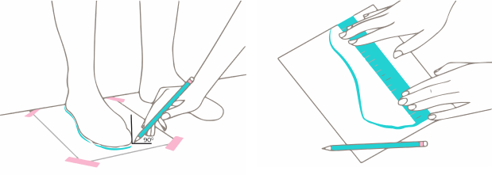
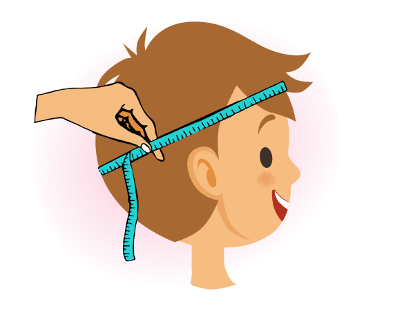

22 марта, 2021
Как правильно подобрать размер детской одежды и детской обуви
Нет повести печальнее на свете, чем повесть о детской одежде и
обуви, которую ребенок надел/обул один раз и вырос из нее. Чтобы не
стать ее героиней, читайте о том, как правильно выбрать размер
детской обуви и одежды, независимо от возраста.
Д
етская обувь: как определить размер
Принцип выбора обуви одинаков и для подростка, и для тоддлера —
измеряем длину стопы и подбираем пару с определенным запасом или
вовсе без него. Главное правило — не измерять стопу нитью,
рулеткой, пядями или другими диковинными способами. Держа ногу на
весу, ребенок немного поджимает ее, и результат искажается.

Правильный способ измерения стар, как мир:
- возьмите большой лист бумаги
- ребенок становится на него ногой, перенося на нее вес
- обведите контур стопы, держа ручку/карандаш прямо
- измерьте прямое расстояние между крайними точками — нужная длина найдена
На иллюстрации отлично видно, как правильно выполнять последний пункт — линейка или лента должны располагаться прямо.
Итак, длину вы определили. Что дальше делать с этой информацией?
Выбирать детскую обувь с учетом запаса, который сделает ее более
комфортной и позволит носить чуть дольше.
Запас для:
- летней обуви должен быть от 0,4 см до 0,6 см, оптимально 0,5 см. А вот если взять 0,8 см и больше, так как обувь носят либо на босую ногу, либо с тонкими летними носочками, обувь будет слишком большой ребенок будет чаще падать.
- демисезонной обуви — туфель и кроссовок — оптимальный запас составляет от 0,5 см до 1 см. Тогда хорошо фиксируется, но остается возможность надеть колготы и/или носки на случай непогоды.
- зимней обуви по тому же принципу, но ориентироваться на объем утеплителя. Например, для ботинок достаточно оставлять 1 см запаса: тогда и колготы, и две пары носков не сделают их менее комфортными. А вот угги или другая обувь с объемным утеплителем требует запаса от 1см до 1,5 см.
А
что с головными уборами?
Главный параметр — объем головы, который измеряют сантиметровой
лентой по надбровным дугам и затылку. Если у ребенка объем головы,
скажем, 50 см, то необходимо выбрать размер, исходя из размеров на
нашем сайте (50-52 см будет в самый раз). То есть нужно выбирать
такой размер, который входит в предлагаемый диапазон:

| Размер на нашем сайте | Рекомендуем взять на объем головы ребенка в см |
|---|---|
| 35-40 см | 35-39 см |
| 40-46 см | 40-45 см |
| 46-50 см | 46-49 см |
| 50-52 см | 50-51 см |
| 52-54 см | 52-53 см |
| 54-56 см | 54-55 см |
| 56-58 см | 56-57 см |
К
ак подобрать размер одежды ребенку?
Мы предлагаем очевидный способ — ориентироваться на рост. Если рост
ребенка равен 83 см, значит, вещи стоит покупать ближайшего размера
— 90 см по стандартной размерной сетке. Предлагаем таблицу по
которой можно быстро определить размер:
| Размер на нашем сайте | Рекомендуем взять на рост ребенка в см |
|---|---|
| 59 | 50-56 |
| 66 | 57-62 |
| 73 | 63-69 |
| 80 | 70-76 |
| 90 | 77-86 |
| 100 | 87-96 |
| 110 | 97-106 |
| 120 | 107-122 |
| 130 | 123-134 |
| 140 | 135-144 |
| 150 | 145-154 |
| 160 | 155-164 |
Если не по росту, то как еще подобрать размер одежды? Нужно
узнать основные параметры тела ребенка и сопоставлять их с
размерной сеткой конкретного товара:
- рост
- объем груди
- объем талии
- объем бедер
- длина руки от плеча до запястья
- длина ноги от пояса до пола
- длина ноги от паха до пола (внутренняя длина штанов)
Зная эти параметры, можно выбрать детскую одежду правильного
размера, независимо от ее вида: штаны, юбки, комбинезоны, шорты,
платья и многое другое. Снимать их важно непосредственно перед
покупкой. Рост маленьких детей, что еще не стоят прочно на своих
двух, лучше измерять в положении лежа.
Вопрос запаса актуален и для одежды. Часть брендов шьет «растущую» одежду, размер которой можно регулировать посредством манжет. Но большинство придерживается единой размерной сетки, поэтому приходится учитывать небольшой запас, чтобы вещь прослужила больше одного сезона.
Вопрос запаса актуален и для одежды. Часть брендов шьет «растущую» одежду, размер которой можно регулировать посредством манжет. Но большинство придерживается единой размерной сетки, поэтому приходится учитывать небольшой запас, чтобы вещь прослужила больше одного сезона.
Для летней одежды большой запас не нужен: ребенок может путаться в складках ткани и больше потеть. Демисезонную и зимнюю одежду нужно всегда выбирать с запасом:
- если ребенок приближается к верхней границе своего размера (пример, рост ребенка 97 см, а размера — 100 см), правильнее покупать одежду следующего размера (для примера это будет 110 см) — иначе он может вырасти из нее еще до конца сезона;
- а вот куртки, ветровки и парки можно смело покупать с запасом на размер — их крой не сковывает движения, но остается возможность поддеть что-то потеплее.
М
ы всегда готовы проконсультировать Вас
Мы позаботились о том, чтобы ошибок с размерами было как можно
меньше — каждый товар сопровождается информацией о замерах, есть
общая таблица с нашими рекомендациями. Если вы все равно не уверены
как выбрать размер одежды или обуви ребенку, смело пишите или
звоните нам — поможем подобрать верный размер для любой вещи.